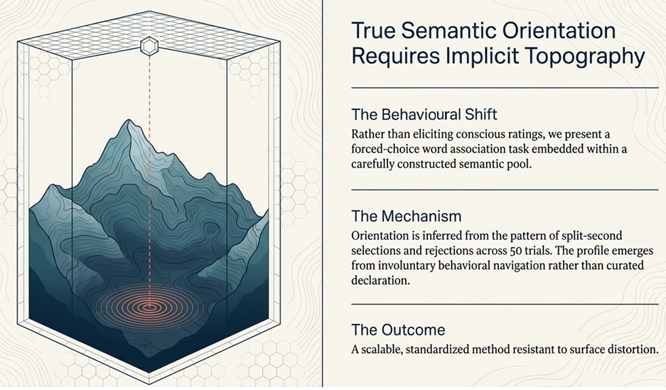

Home
Just a Minute
Petalyx™
HMX
Semantic Bathymetry™
Insightvault
Technology
About Us
Privacy
Bibliography
A plain-English introduction
Just a Minute
Traditional surveys measure what individual people
say
.
Petalyx™
and
HMX
measure what people instinctively
feel
.
Ontologos
converts those associations into stable
geometric coordinates
.
Semantic Bathymetry™
transforms them into
anonymised population data
.
Semba AI
acts as an independent data custodian.
Insightvault
analyses
collective sentiment
and how it changes over time.
